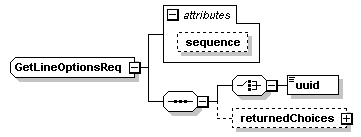
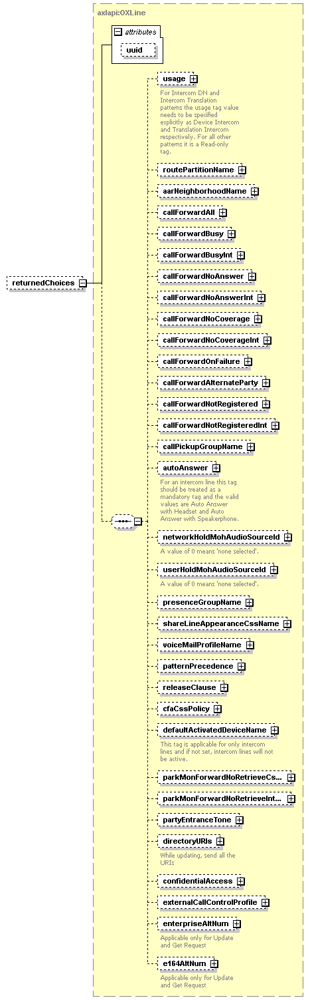

| diagram |  | ||||||||||||
| namespace | http://www.cisco.com/AXL/API/10.5 | ||||||||||||
| children | uuid returnedChoices | ||||||||||||
| used by |
|
||||||||||||
| attributes |
|
||||||||||||
| source | <xsd:complexType name="GetLineOptionsReq"> <xsd:sequence> <xsd:choice> <xsd:element name="uuid" type="axlapi:XUUID"/> </xsd:choice> <xsd:element name="returnedChoices" type="axlapi:OXLine" minOccurs="0"/> </xsd:sequence> <xsd:attribute name="sequence" type="xsd:unsignedLong" use="optional"/> </xsd:complexType> |
| type | xsd:unsignedLong | ||
| properties |
|
||
| source | <xsd:attribute name="sequence" type="xsd:unsignedLong" use="optional"/> |
| diagram | |||||||
| type | axlapi:XUUID | ||||||
| properties |
|
||||||
| facets |
|
||||||
| source | <xsd:element name="uuid" type="axlapi:XUUID"/> |
| diagram |  | ||||||||||||
| type | axlapi:OXLine | ||||||||||||
| properties |
|
||||||||||||
| children | usage routePartitionName aarNeighborhoodName callForwardAll callForwardBusy callForwardBusyInt callForwardNoAnswer callForwardNoAnswerInt callForwardNoCoverage callForwardNoCoverageInt callForwardOnFailure callForwardAlternateParty callForwardNotRegistered callForwardNotRegisteredInt callPickupGroupName autoAnswer networkHoldMohAudioSourceId userHoldMohAudioSourceId presenceGroupName shareLineAppearanceCssName voiceMailProfileName patternPrecedence releaseClause cfaCssPolicy defaultActivatedDeviceName parkMonForwardNoRetrieveCssName parkMonForwardNoRetrieveIntCssName partyEntranceTone directoryURIs confidentialAccess externalCallControlProfile enterpriseAltNum e164AltNum | ||||||||||||
| attributes |
|
||||||||||||
| source | <xsd:element name="returnedChoices" type="axlapi:OXLine" minOccurs="0"/> |